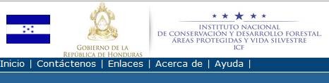

Barra de informaciones sobre la aplicación
La Barra de Informaciones (arriba a la izquierda) presenta diferentes pestañas con acciones de forma general sobre la aplicación Catalogo de Metadatos y el módulo GeoNetwork, base de desarrollo de la aplicación.

Barra de Informaciones sobre la aplicación
- Inicio: Permite regresar a la página inicial de la aplicación Catalogo de Metadatos
- Contáctenos: Permite al usuario de requerir informaciones o mandar retroalimentaciones sobre la aplicación
- Enlaces: Permite conectarse a sitios útiles para el uso de GeoNetwork
- Acerca de: Permite obtener informaciones sobre GeoNetwork
- Ayuda: Permite obtener informaciones sobre el uso de GeoNetwork
Una ulterior pestaña Administración es visible y accesible solo por los usuarios autenticados y autorizados como Administrador de Metadatos:
- Administración: Permite la creación, el manejo y la validación de los metadatos a través del Panel de Administración Metadatos.